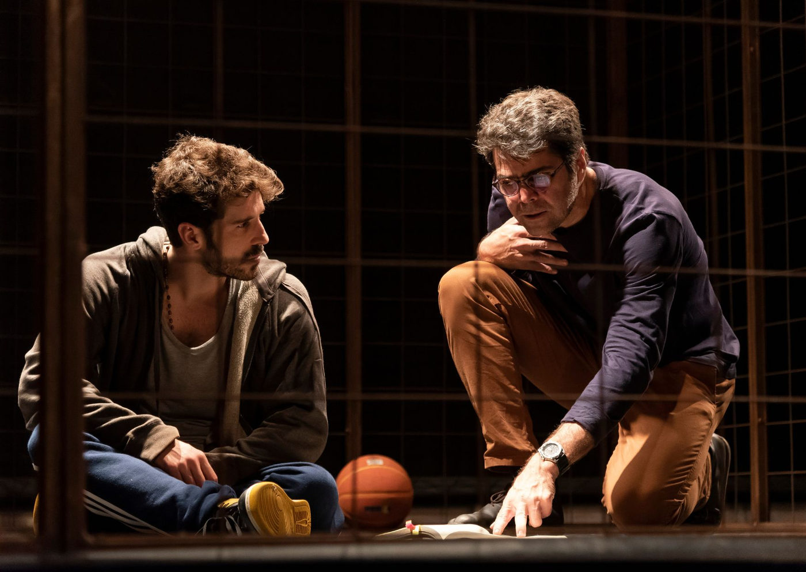

Tebas Land, sucesso de público e crítica, reestreia em São Paulo no Teatro Vivo

Aclamado espetáculo de Sergio Blanco retorna com direção de Victor Garcia Peralta e elenco premiado
Após temporadas de sucesso no Brasil e no exterior, a premiada peça Tebas Land, do dramaturgo uruguaio Sergio Blanco, retorna a São Paulo para uma nova temporada no Teatro Vivo, entre os dias 15 de abril e 28 de maio, com sessões às terças e quartas-feiras, às 20h.
Sob a direção de Victor Garcia Peralta e estrelada por Otto Jr. e Robson Torinni, a montagem é uma autoficção que narra os encontros entre um dramaturgo e um jovem condenado por parricídio.
O espetáculo já passou por importantes palcos e recebeu diversos prêmios, incluindo o Shell RJ de Melhor Ator (Otto Jr.) e o Botequim Cultural de Melhor Espetáculo, Direção e Ator (Robson Torinni). Também esteve presente no Festival de Avignon, na França, um dos maiores eventos de teatro do mundo.
Enredo e proposta cênica
A trama se desenrola em um presídio de segurança máxima, onde um dramaturgo busca reconstruir a história de um crime real: o assassinato de um pai pelo próprio filho, com 21 golpes de garfo. O cenário é uma quadra de basquete, espaço onde os encontros entre os personagens ganham um tom quase documental.
A peça propõe uma reflexão metalinguística sobre os limites entre realidade e ficção, com Robson Torinni interpretando tanto o jovem assassino quanto o ator que o representa. Essa “peça dentro da peça” é uma marca das obras de Sergio Blanco e convida o público a refletir sobre os processos criativos da dramaturgia.
“O texto nos cativou pelos dois diferentes planos, razão e emoção, e pelo processo criativo imbuído neles, em que a dramaturgia é construída durante a ação da peça”, explica o diretor Victor Garcia Peralta.
Impacto e temas abordados
Inspirada em mitos como o de Édipo e na vida de São Martinho de Tours, a dramaturgia também faz referência a obras como Os Irmãos Karamazov, de Dostoievski; Um Parricida, de Maupassant; e Dostoievski e o Parricídio, de Freud.
A peça discute temas como paternidade, famílias disfuncionais, solidão, abuso infantil, falência do sistema prisional e a importância da empatia e da escuta. Para o elenco e a direção, esses elementos são os responsáveis pela forte conexão do espetáculo com o público.
“Nem todos podemos ser pais, mas todos somos filhos e, portanto, todos temos a experiência da descendência. É também um trabalho sobre a dinâmica da construção de uma peça”, afirma o autor Sergio Blanco.
Além disso, Tebas Land chama atenção para os efeitos duradouros dos abusos na infância. Um levantamento realizado no Brasil revelou que, apenas no primeiro semestre de 2022, 84% das violações contra crianças de até 6 anos foram cometidas por familiares — dados que tornam o tema ainda mais urgente.
“A história conecta duas pessoas de diferentes origens, criando um espaço de empatia. O espetáculo reforça a importância da arte como veículo de transformação social”, ressalta Peralta.
Serviço – Tebas Land
Temporada: 15 de abril a 28 de maio de 2025
Dias e horários: Terças e quartas-feiras, às 20h
Local: Teatro Vivo – Av. Dr. Chucri Zaidan, 2460, Vila Cordeiro – São Paulo
Ingressos:
Preço Popular: R$ 40 (inteira) | R$ 20 (meia)
Regulares: R$ 120 (inteira) | R$ 60 (meia)* *Meia-entrada válida para estudantes, professores, idosos, pessoas com deficiência, funcionários Vivo e clientes Vivo Valoriza (mediante comprovante ou resgate via app)
Venda de ingressos online: https://site.bileto.sympla.com.br/teatrovivo/
Bilheteria presencial: Abre 2h antes da apresentação, apenas em dias de espetáculo
Telefone: (11) 3279-1520
Duração: 1h40
Classificação indicativa: 16 anos
Capacidade do teatro: 274 lugares
Acessibilidade: Espaço acessível a cadeirantes e pessoas com mobilidade reduzida.
Reservas de assentos acessíveis: pelo telefone (11) 3430-1524 (2h antes das apresentações) ou pelo e-mail teatrovivo@trimitraco.com.br